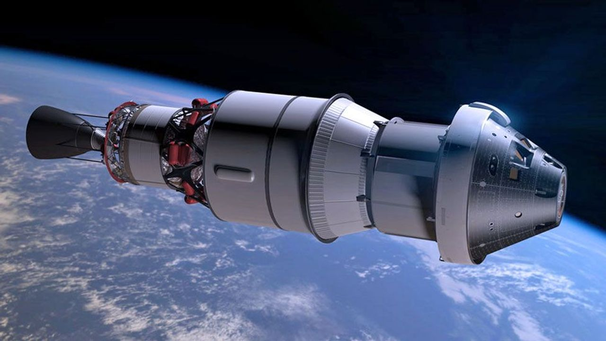

Welcome to Artemis II
NASA's Artemis II mission will send four astronauts on a lunar flyby aboard the Orion spacecraft, paving the way for future lunar surface landings and humanity's return to the Moon.

NASA's Artemis II mission will send four astronauts on a lunar flyby aboard the Orion spacecraft, paving the way for future lunar surface landings and humanity's return to the Moon.

During the lunar flyby, Orion will collect crucial data about the Moon's surface composition, gravitational field, and radiation environment.